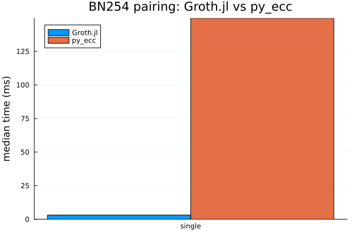
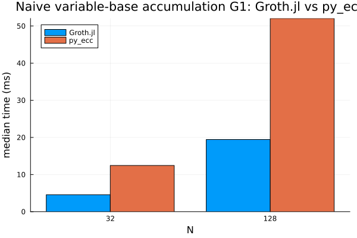

Benchmarks
The benchmarks/ project captures runtime and throughput measurements for the hottest Groth16 paths. This page summarises how to regenerate the data and shows the latest artefacts.
Running the Suite
Instantiate the root workspace:
julia --project=. -e 'using Pkg; Pkg.instantiate(workspace=true)'Run the benchmark harness (artifacts land under
benchmarks/artifacts/<run_id>/):julia --project=. benchmarks/run.jlFor a faster developer loop during primitive/backend work, use a filtered profile or an explicit group list:
julia --project=. benchmarks/run.jl --list-profiles julia --project=. benchmarks/run.jl --profile=quick julia --project=. benchmarks/run.jl --profile=stage3 julia --project=. benchmarks/run.jl --profile=stage5 julia --project=. benchmarks/run.jl --profile=stage7a julia --project=. benchmarks/run.jl --profile=stage8 julia --project=. benchmarks/run.jl --profile=stage8a julia --project=. benchmarks/run.jl --groups=bn254_primitives,bn254_polynomials,pairing_micro julia --project=. benchmarks/run.jl --groups=bn254_curve_kernels,batch_norm julia --project=. benchmarks/run.jl --groups=glv_scalar_tuning julia --project=. benchmarks/run.jl --groups=scalar_plumbingRegenerate plots (latest run by default, or pass a run id / JSON file):
julia --project=. benchmarks/plot.jl julia --project=. benchmarks/plot.jl 2026-03-05_144036Compare two snapshots and flag regressions (20% threshold by default):
julia --project=. benchmarks/compare.jl 2026-03-05_144036 2026-03-06_091500 julia --project=. benchmarks/compare.jl 2025-09-29_121914 2026-03-05_144036 10Profile the
prove_fullpath on the deterministic benchmark fixtures:julia --project=. benchmarks/profile_prove_full.jl julia --project=. benchmarks/profile_prove_full.jl --run-id=2026-03-05_144036 --fixture=sum_of_products_small --repetitions=75Generate a one-shot markdown report (run -> plot -> compare latest-1 vs latest):
julia --project=. benchmarks/report.jl julia --project=. benchmarks/report.jl --skip-run --threshold=10
The harness writes a timestamped JSON (raw statistics) and PNG charts covering direct BN254 field and tower primitives, direct G1/G2 add-double-affine kernels, BN254 Fr polynomial/domain helpers, scalar multiplication, the Stage 7A GLV scalar sweep, the Stage 8A prover scalar-plumbing comparison, MSM, pairing, normalisation, Groth16 end-to-end timings, and prove_full fixture breakdowns. The profiling script writes text profiler dumps under the same artifact tree, but profiling remains a separate workflow from reproducible timing baselines. For the Stage 8 prover baseline specifically, the benchmark fixtures now prove once, assert verify_full, and record deterministic proof points in the artifact _semantic section before any timing starts.
When the workspace also includes a sibling py_ecc/ checkout and python3 is available, the benchmark run additionally records matched BN254 primitive comparisons against py_ecc for G1/G2 scalar multiplication, naive variable-base accumulation, and a single pairing. These are primitive-only comparisons; they are not end-to-end Groth16 prover comparisons.
The benchmark artifact also contains a _semantic section with deterministic serialized outputs for the BN254 primitive fixtures and direct curve-kernel fixtures. The Stage 8 prove_full fixture run adds deterministic proof-point outputs there as well. Those records are not plotted, but they are kept so future backend migrations can compare exact results alongside timing data. The _meta section records whether the run was the default full suite or a filtered benchmark profile.
Longer historical optimization notes live in Benchmark Snapshots. This page keeps the benchmark workflow and external reference comparisons in one place.
External Reference Summaries
The large raw benchmark artifacts under benchmarks/artifacts/ are intentionally ignored by git. Durable external-comparison numbers are summarized in docs/src/assets/external_benchmark_summary.json.
using JSON
summary_path = joinpath(@__DIR__, "assets", "external_benchmark_summary.json")
external_summary = JSON.parsefile(summary_path)
keys(external_summary)KeySet for a JSON.Object{String, Any} with 5 entries. Keys:
"generated_on"
"scope"
"notes"
"py_ecc"
"arkworks"py_ecc
The py_ecc comparison is a primitive-only BN254 comparison against the local sibling py_ecc/ checkout. It covers deterministic G1/G2 scalar multiplication, naive variable-base accumulation, and a single pairing. It is not a Groth16 prover comparison.
Latest preserved local summary: benchmarks/artifacts/2026-04-01_174825/ from branch feat/bn254-montgomery-stage7-msm-specialization on machine znver5. The raw artifact directory is ignored by git; the table below is the tracked summary.
| Workload | Groth.jl median | py_ecc median | Result |
|---|---|---|---|
| G1 scalar multiplication | 0.126 ms | 0.264 ms | Groth.jl 2.09x faster |
| G2 scalar multiplication | 0.255 ms | 1.492 ms | Groth.jl 5.85x faster |
| G1 naive accumulation, N=32 | 4.577 ms | 12.452 ms | Groth.jl 2.72x faster |
| G2 naive accumulation, N=32 | 11.512 ms | 69.238 ms | Groth.jl 6.01x faster |
| Single pairing | 3.140 ms | 149.689 ms | Groth.jl 47.67x faster |
The plots below are tracked copies of the PNGs generated for the same preserved 2026-04-01_174825 artifact; the benchmark was not rerun when these images were added to the docs.
| Scalar multiplication | Pairing |
|---|---|
 |  |
| G1 naive accumulation | G2 naive accumulation |
 |  |
Earlier py_ecc checkpoints explain the progression:
| Run | Meaning | Selected medians |
|---|---|---|
2026-03-31_212200 | First external primitive baseline | G1 scalar: Groth.jl 0.381 ms, py_ecc 0.278 ms; G2 scalar: Groth.jl 2.092 ms, py_ecc 1.497 ms; pairing: Groth.jl 51.616 ms, py_ecc 146.294 ms |
2026-03-31_215847 | After scalar multiplication tuning | G1 scalar: Groth.jl 0.250 ms, py_ecc 0.269 ms; G2 scalar: Groth.jl 1.522 ms, py_ecc 1.477 ms; pairing: Groth.jl 51.649 ms, py_ecc 147.931 ms |
arkworks
The arkworks comparison uses temporary deterministic one-off harnesses against the local ark-works/ checkout and local Groth.jl packages. The current tracked result asset is docs/src/assets/arkworks_benchmark_refresh_2026_05_11.json.
using JSON
arkworks_path = joinpath(@__DIR__, "assets", "arkworks_benchmark_refresh_2026_05_11.json")
arkworks_summary = JSON.parsefile(arkworks_path)
arkworks_summary["run_id"]"2026-05-11_arkworks_bn254_refresh"The refreshed local run was measured on an AMD Ryzen AI 9 HX 370 with Julia 1.12.5, Rust 1.91.1, and local arkworks path dependencies. Each value below is a median per operation.
| Workload | Groth.jl median | arkworks median | Result |
|---|---|---|---|
| G1 scalar multiplication | 0.115 ms | 0.00654 ms | arkworks 17.58x faster |
| G2 scalar multiplication | 0.223 ms | 0.0170 ms | arkworks 13.11x faster |
| G1 naive accumulation, N=32 | 3.462 ms | 0.182 ms | arkworks 18.98x faster |
| G2 naive accumulation, N=32 | 7.324 ms | 0.481 ms | arkworks 15.22x faster |
| Single pairing | 2.960 ms | 0.415 ms | arkworks 7.14x faster |
Interpretation: Groth.jl is now well beyond the original BigInt path and beats py_ecc on the preserved primitive comparison, but arkworks still leads on these matched BN254 primitive workloads. This is not an end-to-end Groth16 prover comparison.